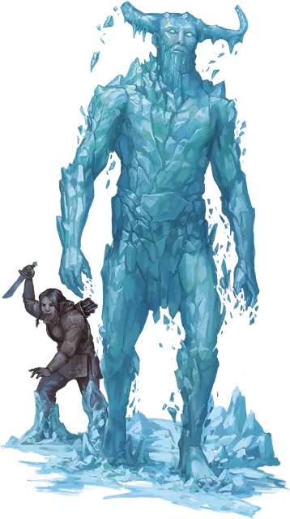

Инейный скиталец
Rime Hulk
Большой Элементаль, обычно нейтрально-злой

Класс Доспеха 15 (природный доспех)
Хиты 85 (9к10 + 36)
Скорость 30 футов
| мод | спас | ||
|---|---|---|---|
| СИЛ | 18 | +4 | +4 |
| ЛОВ | 10 | +0 | +0 |
| ТЕЛ | 18 | +4 | +4 |
| мод | спас | ||
|---|---|---|---|
| ИНТ | 8 | −1 | −1 |
| МДР | 9 | −1 | −1 |
| ХАР | 6 | −2 | −2 |
Иммунитет к урону холод, яд
Иммунитет к состояниям истощение, отравление
Чувства пассивное Восприятие 9
Языки Акван, Великаний
Опасность 5 (1800 опыта)
Бонус мастерства +3
Особенности
Предсмертная вспышка. Когда инейный скиталец умирает, он взрывается сферой холодного воздуха, радиусом 10 футов с центром в его пространстве. Каждое существо в этой области должно преуспеть в спасброске Телосложения Сл 15, иначе получит 10 (3к6) урона холодом.
Действия
Мультиатака. Инейный скиталец совершает две атаки Размашистым ударом.
Размашистый удар. . Рукопашная атака оружием: +7 к попаданию, досягаемость 10 футов, одна цель. Попадание: 9 (1к10 + 4) дробящего урона плюс 9 (2к8) урона холодом.
Морозный шлейф (перезарядка 5-6). Инейный скиталец перемещается на свою скорость, не провоцируя атак, и может перемещаться через пространство существ Среднего размера и меньше. Каждый раз, когда инейный скиталец впервые входит в пространство другого существа во время этого перемещения, это существо должно совершить спасбросок Телосложения Сл 15. В случае провала существо получает 22 (4к10) урона холодом, а его скорость снижается на 10 футов до начала следующего хода инейного скитальца. В случае успеха существо получает только половину этого урона.
Описание
Впрочем, если говорить серьезно, лучше не погружаться в то, кем были или чем могли бы стать эти скитальцы, если бы у них все сложилось по-другому. Они опасны, и большинство из них не желают вам добра. Действуйте соответственно.
-Бигби
Инейные скитальцы - это увядшая ветвь генеалогического древа ледяных великанов, происходящая от древних великанов, что удалились от мира и поддались своей элементальной природе. Большинство инейных скитальцев обитают в Вечной Мерзлоте, “Плана Льда”, которая образует границу между Планами Стихий Воздуха и Воды. Другие скрываются в изолированных расщелинах огромных полярных ледников.
Меньшие по размерам и более слабые, чем их предки, инейные скитальцы представляют собой грубо сформированные массы инея и льда. Их физические формы, отдаленно напоминающие великанов, нестабильны, постоянно распадаясь на части и перестраиваясь по мере того, как от них поднимаются облака холодного воздуха. Когда инейный скиталец движется, он оставляет за собой ледяной след, который может заморозить врагов на месте. Когда он умирает, инейный скиталец взрывается потоком холода.